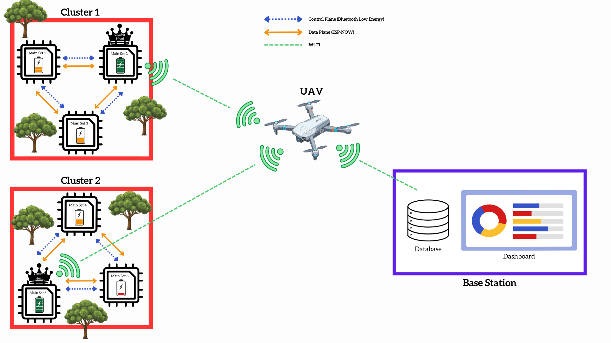
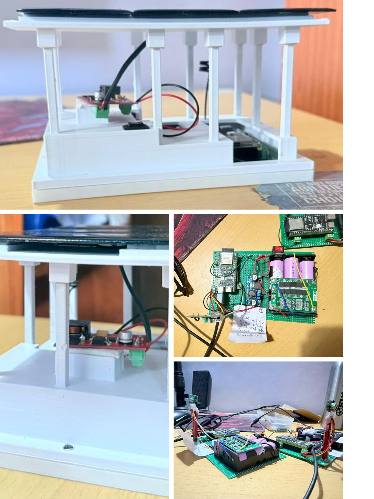
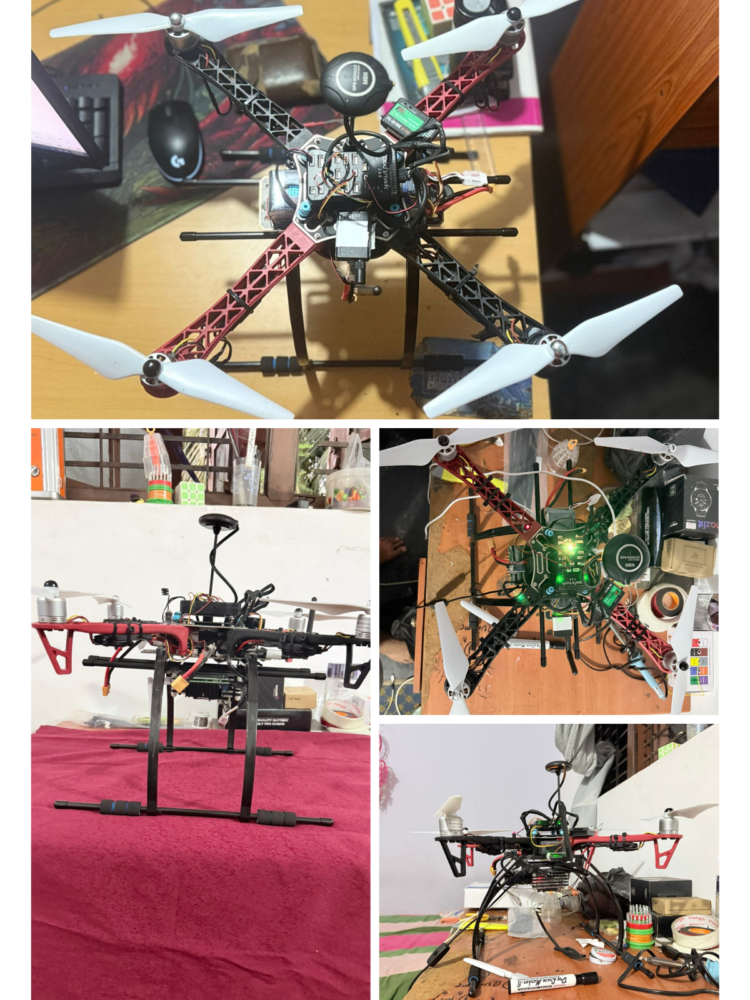

Disconnected zones
Built for forests, disaster areas, rural sites, and other places with no permanent communication infrastructure.
This project presents a self-organizing, self-healing wireless sensor network that uses UAV-assisted data ferrying to collect sensor data from disconnected environments.
Built for forests, disaster areas, rural sites, and other places with no permanent communication infrastructure.
Nodes organize into clusters and choose a Cluster Head using a algorithm called STELLAR that considers trust, energy, uptime, and link quality.
Adaptive power modes, local storage, and efficient communication aim to extend node lifetime.
A UAV wakes the network, collects buffered data, and transports it back to the base station.
Domain
The project combines embedded systems, wireless sensor networks, UAV systems, trust-aware clustering, and delay-tolerant data delivery.
Architecture

Sensor nodes capture readings and manage local storage and energy.
Nodes elect a stable and secure Cluster Head using multiple metrics.
The Cluster Head aggregates data and keeps it ready for UAV handover.
The UAV triggers wake-up, collects buffered data, and carries it onward.
A dashboard displays health, alerts, routes, and environmental readings.
Hardware

First-version implementation of the ground sensor node hardware.

First-version implementation of the UAV platform used for data ferrying.
Milestones
Documents
This section lists the produced documents and placeholders for pending deliverables.
Approved topic and project scope definition.
Open PDFSystem scope, architecture, interfaces, risks, and requirements.
Open PDFIndividual proposal focused on UAV-assisted data ferrying and routing.
Open PDFIndividual proposal focused on autonomous cluster formation and CH election.
Open PDFIndividual proposal focused on node hardware and power-aware sensing.
Open PDFIndividual proposal focused on member-to-CH communication and handover.
Open PDFIntegrated paper describing the SKY-MULE system and experimental evaluation.
Open PDFAdd your project charter link or file here before final submission.
Add link laterMain final report and 4 member documents can be added here later.
Add links laterPresentations
Main project channel with test runs, demos, and other uploaded SKY-MULE videos.
Open ChannelFirst progress presentation in PDF format.
Open PDFSecond progress presentation in PDF format.
Open PDFPlaylist covering the STELLAR-related tests, demonstrations, and implementation flow.
Open PlaylistPlaylist covering UAV-related tests, demo runs, and system behavior videos.
Open PlaylistAbout us
IT22069122
UAV Data Ferrying & RoutingIT22564986
Autonomous Cluster Formation & CH SelectionIT22360496
Multi-Sensor Node & Power DesignIT22088000
Cluster Data Communication